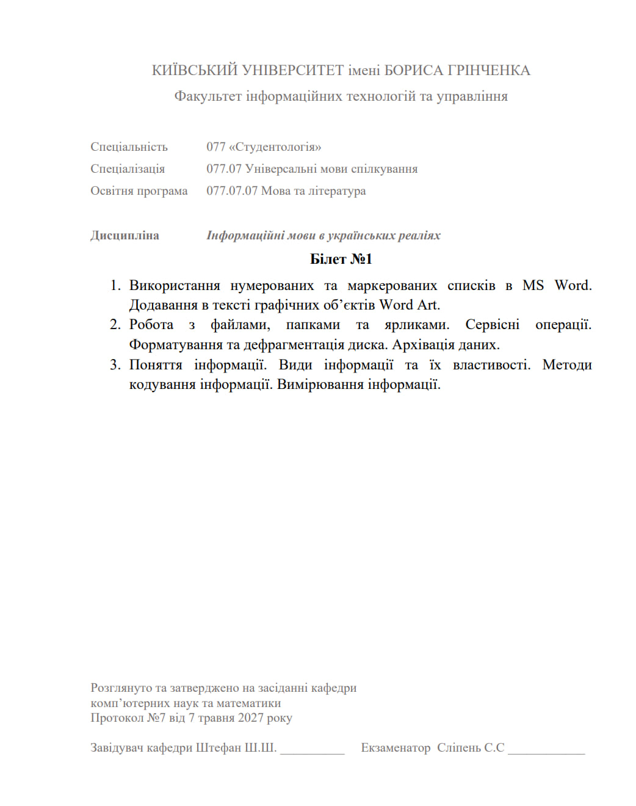

<div class="menu">
    <div class="menu__wrapper">
        <div class="menu__container container">
            <div class="menu__body">
                <div class="menu__zavd zavd-menu">
                    <div class="zavd-menu__zavd">
                        <div class="zavd__name">Завдання</div>
                        <div class="zavd__text">
                            Поняття iнформацiї. Види iнформацiї та їх властивості. Методи кодування iнформацiї.
                            Вимірювання iнформацiї.
                        </div>
                        <div class="otstup"></div>
                    </div>
                    <div class="zavd-menu__zavd">
                        <div class="zavd__name">Завдання</div>
                        <div class="zavd__text">
                            Організація обчислень. Абсолютна та відносна адресація в MS Excel. Використання
                            функцій в MS
                            Excel.
                        </div>
                        <div class="otstup"></div>
                    </div>
                    <div class="zavd-menu__zavd">
                        <div class="zavd__name">Завдання</div>
                        <div class="zavd__text">
                            Використання нумерованих та маркерованих спискiв в МS Word. Додавання в тексті
                            графічних
                            об’єктів Word Art.
                        </div>
                        <div class="otstup"></div>
                    </div>
                    <div class="zavd-menu__zavd">
                        <div class="zavd__name">Завдання</div>
                        <div class="zavd__text">
                            Комп’ютерні віруси. Захист вiд комп'ютерних вiрусiв. Класифiкацiя комп'ютерних
                            вiрусiв.
                        </div>
                        <div class="otstup"></div>
                    </div>
                    <div class="zavd-menu__zavd">
                        <div class="zavd__name">Завдання</div>
                        <div class="zavd__text">
                            Робота з файлами, папками та ярликами. Сервiснi операції. Форматування та
                            дефрагментацiя
                            диска. Архiвацiя даних.
                        </div>
                        <div class="otstup"></div>
                    </div>
                    <div class="zavd-menu__zavd">
                        <div class="zavd__name">Завдання</div>
                        <div class="zavd__text">
                            МS Word. Редагування та форматування абзаців. Основні параметри форматування
                            роздiлiв.
                        </div>
                        <div class="otstup"></div>
                    </div>
                </div>
                <div class="menu__pruklad pruklad-menu">
                    <div class="pruklad-menu__pruklad">
                        <picture><source srcset="./img/qwerty.webp" type="image/webp"></picture>
                    </div>
                </div>
                <div class="menu__kolont kolont-menu">
                    <div class="kolont-menu__vumoga">Назва університету</div>
                    <div class="kolont-menu__vvod">
                        КИЇВСЬКИЙ УНІВЕРСИТЕТ імені БОРИСА ГРІНЧЕНКА
                    </div>

                    <div class="kolont-menu__vumoga">Назва факультету</div>
                    <div class="kolont-menu__vvod">Факультет інформаційних технологій та управління</div>

                    <div class="kolont-menu__vumoga">Спеціальність</div>
                    <div class="kolont-menu__vvod">
                        077 «Студентологія»
                    </div>
                    <div class="kolont-menu__vumoga">Спеціалізація</div>
                    <div class="kolont-menu__vvod">077.07 Універсальні мови спілкування</div>

                    <div class="kolont-menu__vumoga">Освітня програма </div>
                    <div class="kolont-menu__vvod">077.07.07 Мова та література</div>

                    <div class="kolont-menu__vumoga">Дисципліна </div>
                    <div class="kolont-menu__vvod">
                        Інформаційні мови в українських реаліях
                    </div>
                    <div class="kolont-menu__vumoga">Затвердження</div>
                    <div class="kolont-menu__vvod">
                        Розглянуто та затверджено на засіданні кафедри
                        комп’ютерних наук та математики
                        Протокол №7 від 7 травня 2027 року

                    </div>
                    <div class="kolont-menu__vumoga">Завідувач кафедри</div>
                    <div class="kolont-menu__vvod">
                        Штефан Ш.Ш
                    </div>
                    <div class="kolont-menu__vumoga">Екзаменатор</div>
                    <div class="kolont-menu__vvod">
                        Сліпень С.С
                    </div>
                </div>
            </div>
        </div>
    </div>
</div>